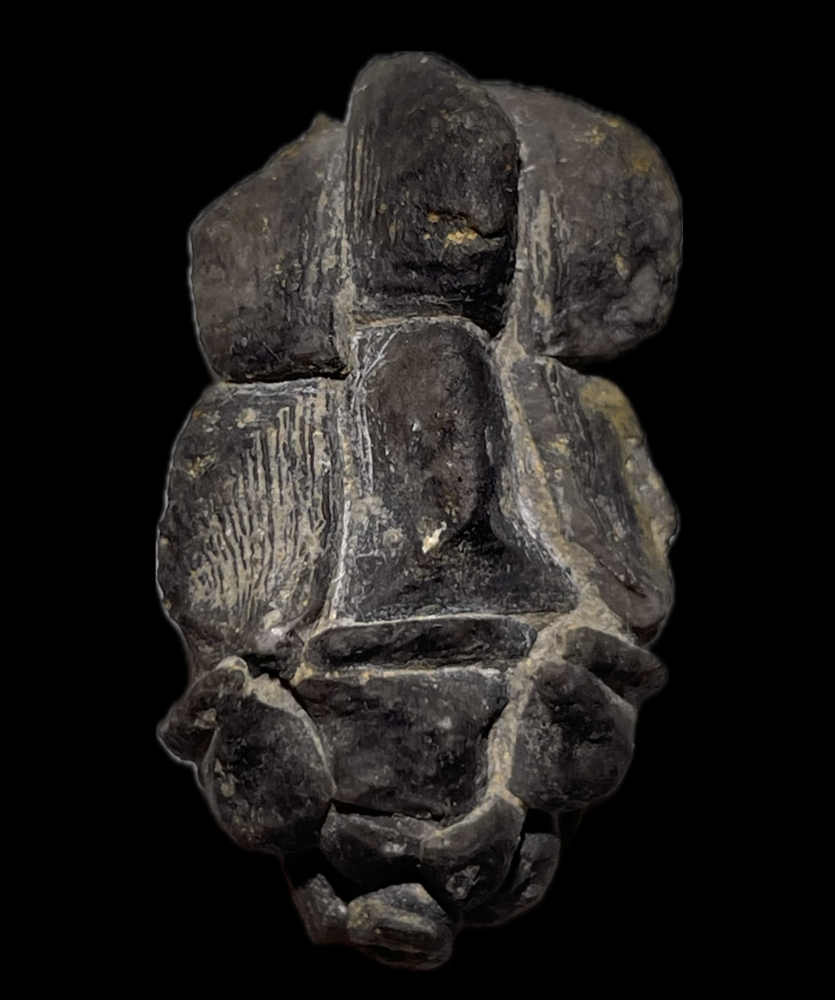
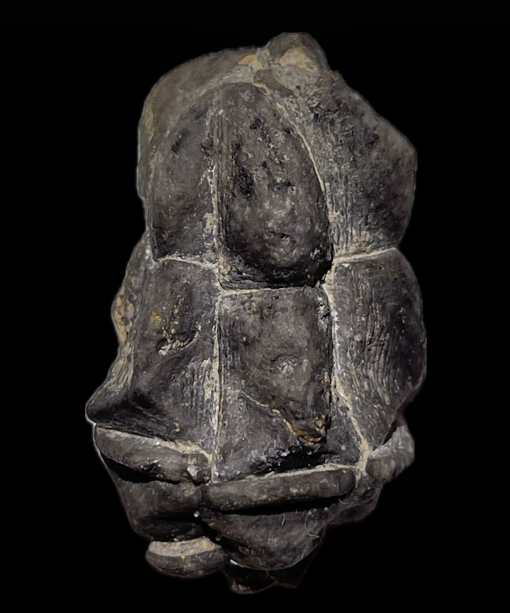
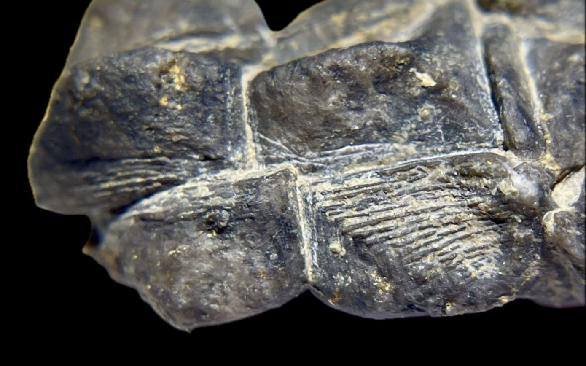

HOME
Halocrinites minor
• Devonian
• Laskowa Gora Beds
• Holy Cross Mountains, Poland
Size: 3 cm crown
Formerly known as Cupressocrinus abbreviatus var. minor (Schultze 1866); Cupressocrinites sampelayoi (Breimer 1962); Abbreviatocrinites sampelayoi (Bohatý 2005).
Addendum: Jan Bohatý has confirmed this specimen as Halocrinites minor (Schultze 1866).
|

|
Copyright © 2024 by Samuel Kim, all rights reserved